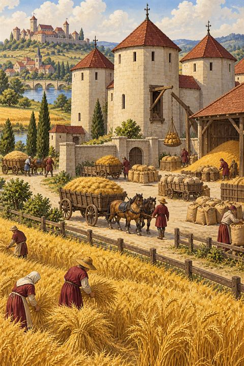

Patria
Buduješ panství pomocí karet krajiny, budov, osob a dalších událostí. Hru nelze prohrát — cílem je rozvíjet panství co nejlépe a na konci získat co nejvíce bodů slávy.
Rozvíjej své panství
Začínáš s balíčkem deseti karet. Jednotlivé karty můžeš během hry vylepšovat do dalších stavů. Lepší stavy obvykle přinášejí silnější produkci, nové efekty a více bodů.
Jeden tah, jedno velké rozhodnutí
- Na začátku tahu se vyloží až čtyři karty.
- Můžeš používat produkci a aktivní efekty vyložených karet.
- Podle potřeby můžeš dobrat další dvě karty, pokud tomu nic nebrání.
- Vylepšení karty je zpravidla hlavní akcí tahu a tah po něm končí.
Produkce, efekty a vylepšení
Produkce
Kliknutím na produkci získáš uvedené suroviny. Karta se poté obvykle odhodí, ale tah pokračuje. Suroviny nasbírané v průběhu tahu zůstávají k dispozici až do jeho konce.
Aktivní efekt
Některé karty mají vlastní akci: mohou vracet karty z odhazovacího balíčku, kopírovat produkci, měnit suroviny nebo vybírat konkrétní cíle. Text na kartě má přednost před obecným pravidlem.
Vylepšení
Zaplať cenu uvedenou na kartě a vyber její další stav. Některé karty mají jedinou cestu vývoje, jiné se větví. Po vylepšení se karta změní do nového stavu a tah zpravidla končí.
Konec balíčku není konec hry
Když dojde dobírací balíček, dokončí se kolo. Hra zobrazí závěr období a následně představí nové karty. Ty se přidají do tvého světa a po zamíchání začne další kolo.
Postupně tak roste nejen síla jednotlivých karet, ale i samotný balíček a možnosti panství.
Nepřátelé, události a trvalé karty
Některé karty se chovají jinak než běžné produkční karty. Mohou zůstávat ve hře, blokovat jiné karty, ukládat dlouhodobý efekt nebo vyžadovat zvláštní cenu.
Symbol ♾️ označuje efekt, který platí po dobu, kdy karta zůstává vyložená. Přesný text konkrétní karty vždy určuje její chování.
Co je dobré vědět
Karty můžeš v aktivní zóně ručně přesouvat mezi dostupnými pozicemi. Počet pozic v řádku lze nastavit v menu. Prázdné pozice zůstávají skutečnými sloty a lze je využít pro vlastní uspořádání.
Hra se automaticky ukládá do tohoto prohlížeče. V menu můžeš stav také uložit do souboru a později jej znovu načíst. Knihovna a odhazovací balíček umožňují kdykoli prohlížet známé karty.